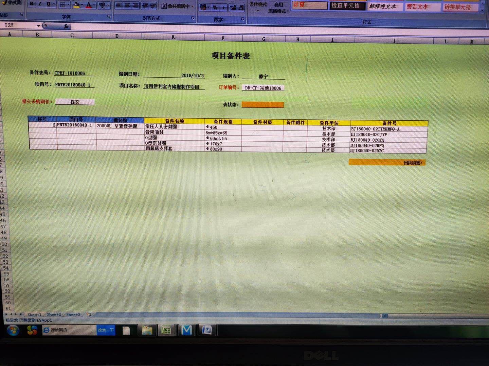

产品合格证
主要元件一览表
项目备件表
产品说明书
1 完工罐体照片…………………………………………………….3
2 产品装配图……………………………………………………….3
3 制造规范 ………………………………………………………….4
4 设备安装 ………………………………………………………….4
5 设备使用注意事项……………………………………………..4
5.1
呼吸器 ………………………………………………………….5
5.2
人孔 …………………………………………………………….5
5.3
搅拌系统…………………………………………………..….5
5.4
吊耳……………………………………….…………………….5
5.5 设备的支腿…………………………………………………...6
5.6 设备的保温…………………………………………………...6
1 完工罐体照片
2、产品的装配图
3、本设备按照如下规范制造：
3.1 NB/T47003.1-2009《钢制焊接常压容器》
3.2 GB16789-1997《食品机械卫生》
3.3 QBT 2681-2004 食品工业用不锈钢薄壁容器
4、设备的安装
4.1设备安装就位后应找正，找正时应该以罐壁为基准，在0°、90°、180°、270°四个方位用铅垂线找正，找正的精度在2mm内，测量时应避开焊缝。
4.2找正后应将调节螺栓锁定（用地脚螺栓连接的应该锁紧螺栓）。
4.3管道的连接应考虑热胀冷缩、管道的外加力及管道的振动影响。
对有热胀冷缩及振动的管道应在设备接管口处加软连接。如下情况必须加软连接：用于加热或冷却的介质进出料口、与泵等转动设备直接连接设备管口。
4.4对管道有外加力的应加管道支撑设法消除该力，不应使力由接管处的罐壁承担。
4.4、带搅拌的设备应在设备找正并牢固固定后进行搅拌的安装。
4.4.1在制造厂已经安装好搅拌的设备，应在设备找正好后对搅拌轴上的临时固定物拆除，并检查搅拌系统是否有异常现象：如连接件在运输途中的是否松动等，打开电机冷却风扇罩，用手动盘车的方法检查转动系统是否正常，应转动无卡阻、转力均匀、无异常响声。
4.4.2有减速箱排气孔的应拆换减速箱的排气塞：用减速机附带的带排气孔的油塞替换最高位的油塞（用其他方式的按照使用说明书操作），因为在减速机运行中由于温度的升高造成减速箱内的压力升高，当达到一定的压力后会造成油泄漏。
5、设备使用注意事项：
5.1、呼吸器：设备顶部设有呼吸器，主要作用为防蝇、防尘及保持罐内压力与大气压力的平衡，严禁将呼吸用其他方法封闭。对带有阀门开关的应该做到和工艺过程联锁动作，防止储罐超出设计压力运行；
5.1.1在排空及放料的过程中应保证该呼吸器的畅通，防止罐内出现负压，更不应将该管口作它用，否则会对罐体造成吸弊甚至报废。
5.1.2呼吸器的排水口应保持通畅，防止水倒流入罐而污染物料。
5.1.3呼吸器应经常清洗，清洗时先拆下顶部的螺母，从顶部往下看顺时针旋转上提即可拿下顶盖，之后可以看到滤网，该网需要经常的清洁，清洁的周期为3个月。
5.1.4
CIP清洗前应先清洗呼吸器，因为CIP清洗时呼吸器的瞬时流量很大（特别是从热水冲洗后转冷水冲洗的瞬间），如过滤网板堵塞（或者不畅）可能会造成罐内负压，而负压对罐会造成直接危险（除非罐已经采用负压参数设计）。
5.2、人孔：人孔的作用为进入内部检测之用，在更换及检修后如需要更换密封垫应更换与介质相容并对食品没有污染的密封垫。图样无特殊要求时该密封垫的材质为硅橡胶，图样有规定时应按照图样的要求，其余管口的密封件也应作相同的处理。
5.3、带搅拌的系统（除遵循下述内容外，还应仔细阅读《搅拌安装使用说明书》）
5.3.1减速机润滑油箱上部有一个油塞，该油塞在设备运输的过程中为防止润滑油的外泄采用无通气孔的油塞，在设备安装到位运行之前应换上带通气孔的油塞，否则会由于油温的上升内压的增加可能造成润滑油的外泄。（减速机厂不同机构可能会不同，如不符合本说明，请按照减速机使用说明书）。
5.3.2搅拌系统应在有介质的情况下运转，严禁空运转（有下部支撑的应至少将下部支撑漫入介质内方可运转），在检修时可以通过手动盘车的办法检测轴及系统的工况，必要时应采用以水代料试运转。如由于特殊的原因需要空运转，运转的时间应尽可能短，特别对于有底部支撑的罐，由于底部支撑内有滑动轴承，滑动轴承运转时需要润滑，一般设计时润滑剂是罐内介质，空转时无介质、无润滑会造成套的快速磨损，极端时由于摩擦发热套会严重变形而报废。
5.3.3有的机架搅拌系统，机架内有轴承。在运行的过程中应定期对该轴承加于润滑，防止出现干摩擦的现象，一旦轴承出现损害应停车检修，不应该让该设备继续运行使设备故障扩大。
5.3.4搅拌系统应纳入动设备的范围加以管理，制定详细的操作规程，确保设备长周期稳定地运行。
5.3.5减速机的齿轮油应定期的更换，油的牌号应与原减速机油相同或相当，减速机油的更换周期为10000小时，具体型号及容量按照减速机使用说明书。
5.3.6密封系统的密封件属易损件在正常的使用情况下，应2年更换一次，防止由于泄漏造成环境污染污染，尽管设备有防止泄漏物料污染的装置，但该装置不可能对设备污染有保护作用，定期更换可以保证设备的卫生。
5.3.7，侧搅拌带机械密封，除CIP时短时每次运行30秒外（此时机械密封的冷却是依靠CIP清洗液），其余任何情况下不能空运转，空运转会直接烧毁机械密封。
4、吊耳仅供空设备的吊装，在有物料的情况下不应采用吊耳吊装，而应将物料排空，或请专用人员处理，否则会造成设备严重变形甚至报废，注意吊耳的设计仅考虑了垂直力。
5、设备的底座一般有可供调正高度的可调节螺栓，在设备安装的时候应确保设备的平稳，设备的移位应重新调节并牢固锁定。有要求的再确认调整完成后用点焊等方法锁紧。
6、设备的外保温仅供保温之用，不可在保温层中加压(如加热)，否则罐体会失稳而报废。
7、设备的保温层最底端有排放孔，该孔是可以平衡保温层内压力与大气压，不可堵塞该孔，如发现有泄漏，应先排除外部因素（如储罐从一个温度较低的地方移动到温度较高的地方所产生的冷凝水），否则是容器泄漏的信号。
技术部
2017年11月15日
江苏新天宝机械有限公司